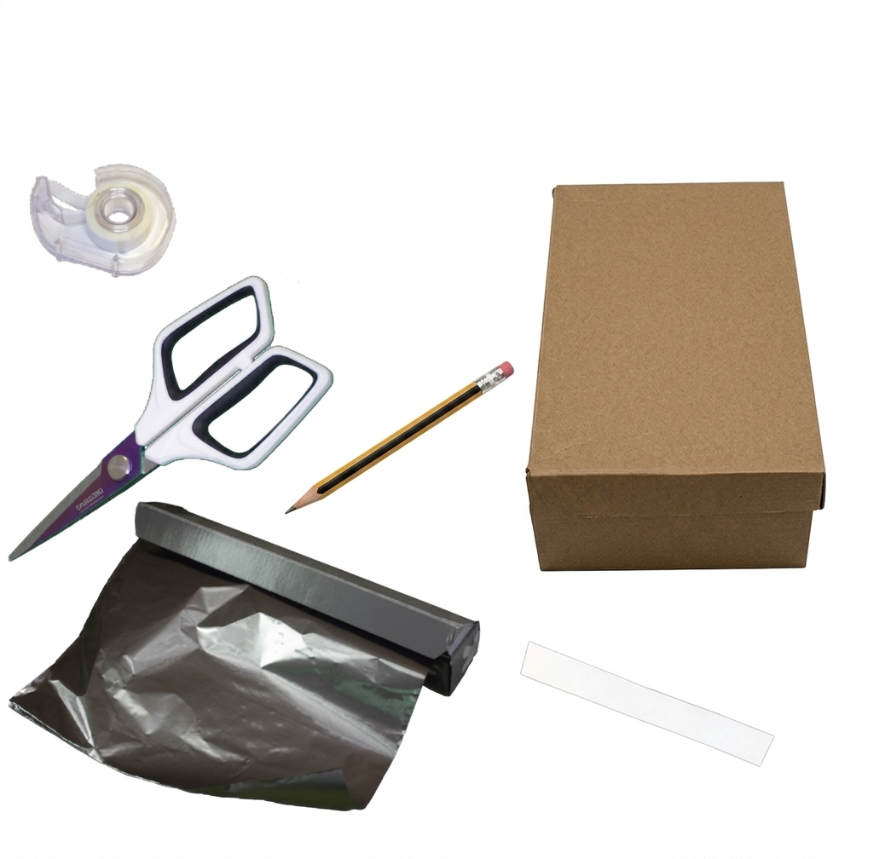
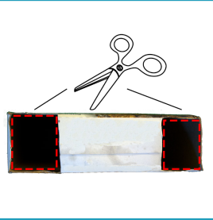
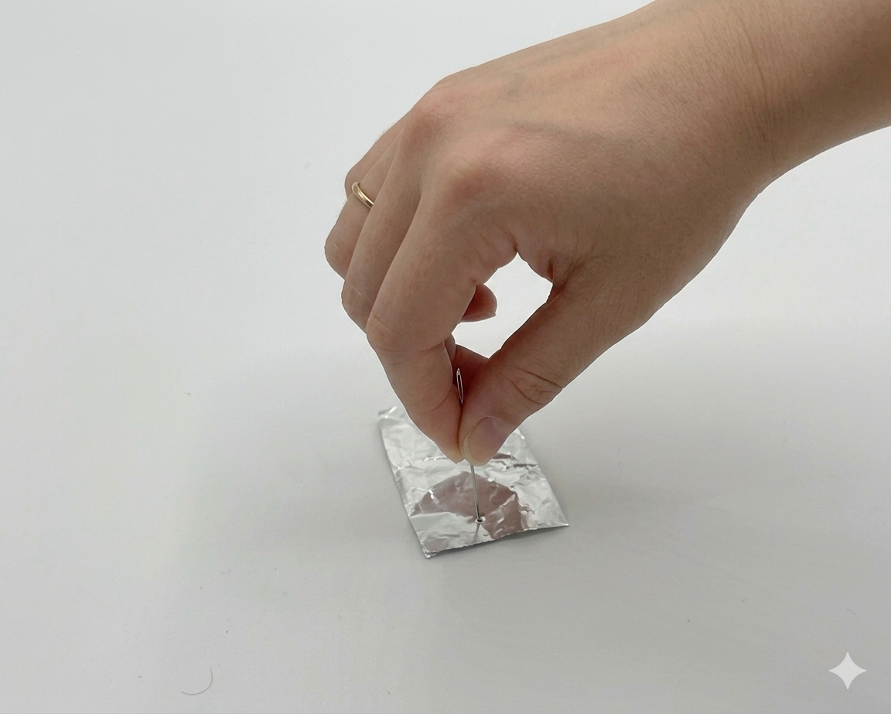
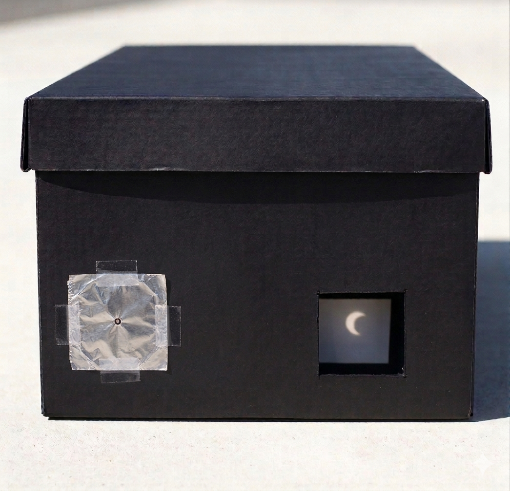
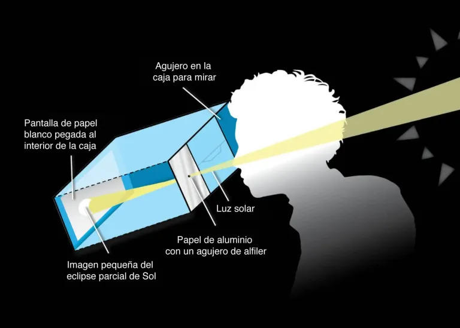

La cámara oscura que hemos fabricado no es la única que puedes hacer. Puedes utilizar una caja de zapatos, o una caja de cereales para proyectar el Sol de forma segura.
3clipse_V5_sin pelis de Roberto
Otras versiones de la cámara oscura
Construyendo una cámara oscura con una caja de zapatos

Comenzaremos con la versión más sencilla, para su construcción utilizaremos una caja de zapatos y los siguientes materiales.
- Caja rectangular (cuanto más larga mejor)
- Cinta adhesiva
- Papel de aluminio
- Papel blanco
- Tijeras
- Aguja, lápiz afilado o chincheta
La caja debe de ser lo más larga posible. Antes de comenzar debemos pintarla de negro por dentro y por fuera con una spray negro mate.
Esperamos hasta que la pintura se seque
Hacemos los cortes en la caja para el estenopo y el visor
En uno de los lados cortos de la caja, marcaremos dos agujeros cuadrados de 2,5 cm de lado. Después, con las tijeras, haremos los agujeros siguiendo las marcas tal y como se muestra en el dibujo.
Esos dos cuadros serán:
- Izquierdo para el estenopo
- Derecho para el visor

Colocamos el papel blanco, nuestra pantalla de proyección.
Nos colocamos en la cara opuesta de la caja de donde hemos practicado los agujeros. Utilizando una regla, medimos los lados.
Tomaremos un folio u otro papel blanco y recortaremos un trozo de papel de esas dimensiones.
Abriremos la caja, y utilizando la cinta adhesiva, lo colocaremos en la cara interna de ese lado de la caja
Colocamos el papel de aluminio en el cuadrado izquierdo
Cortamos un trozo de papel de aluminio cuadrado, un poco mayor que el agujero que hemos hecho. Con el lápiz o una aguja, le haremos un agujero en el centro. Después colocaremos el papel en el agujero de la izquierda utilizando la cinta adhesiva.

Probamos nuestra cámara oscura y la sellamos
Antes de cerrarla, probaremos que la cámara oscura funciona. Para ello, nos pondremos de espaldas a una escena bien iluminada y mirando por el agujero derecho, comprobamos que se ve la imagen proyectada en la pantalla. Si todo está correcto, utilizaremos cinta adhesiva negra para sellar la tapa y evitar que entre luz en la caja.

¿Cómo utilizar esta cámara oscura?
Colócate de pie con el Sol a tu espalda. Apunta el extremo con el orificio de la caja hacia el Sol hasta que, mirando a través del visor veas una imagen del Sol en el extremo opuesto al orificio. Cuanto más larga sea la caja, más grande será la imagen del Sol.
¡Ten cuidado de no mirar al Sol! La idea es que el orificio apunte al Sol y tus ojos miren en dirección contraria. Este método no muestra muchos detalles, pero es útil durante un eclipse parcial para ver como va aumentando la "mordida" que la Luna le da al Sol.

Sustituimos la caja de zapatos por una caja de cereales
Si utilizamos una caja de cereales en lugar de una de zapatos, el procedimiento y el modo de uso es el mismo. Aquí tienes un vídeo que muestra el proceso que puedes seguir.
Obra publicada con Licencia Creative Commons Reconocimiento Compartir igual 4.0